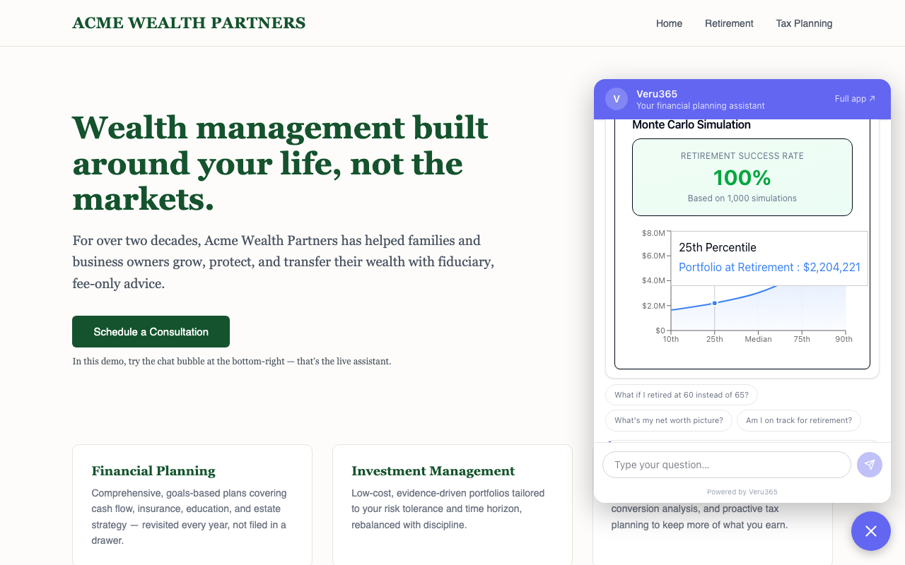
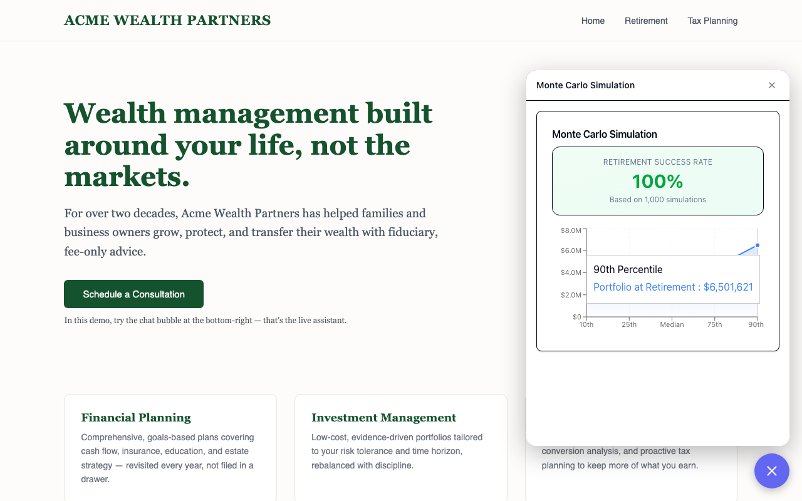

No sales call required. Five steps take you from this page to a live retirement projection rendering inside a chat bubble on a third-party website — everything here is running software, not a mockup.
Total time: about five minutes. Each step tells you what to click and — more importantly — what that click demonstrates about the platform.
Open Acme Wealth's retirement campaign page. Bottom-right corner, there's a chat bubble. Click it.
Open the retirement page →What this demonstrates: installing the widget is one line of code, the page itself is untouched, and it costs the page nothing until a visitor actually opens it. Branding — logo, colors, product name — is fetched live per client from our platform, keyed by one attribute in the install snippet. On the Acme pages the widget runs under our platform's default demo branding; to see the same widget wearing a different firm's live branding record, open the Summit Planning page — the only difference between the two installs is that one attribute.
You'll see suggested questions when the chat opens — tap "Am I on track for retirement?" (or type it).
Watch what happens next. The assistant doesn't paste a canned paragraph — it plans an answer, calls real financial-planning tools against a demo client profile, and streams back both a written answer and live financial modules rendered inside the chat.

What this demonstrates: this is a planning engine wearing a chat interface, not a FAQ bot. The cards you see — retirement projection, net-worth summary — are the same components our platform renders for signed-in clients in the full portal.
In the assistant's answer, find the retirement projection card and hit Expand. The chart opens at full width — an interactive Monte Carlo simulation of retirement outcomes, right inside a chat bubble on a marketing page. You can also widen the whole chat panel with the resize button in its header.

What this demonstrates: this is the moment most demos can't show. A visitor on a landing page just received the same analysis — the same actual chart component — that paying clients see inside the advisor portal. The marketing surface and the product are the same engine, which is why a conversation here converts: the prospect has already experienced the product.
Between answers, the widget offers follow-up chips — try "What if I retired at 60 instead of 65?" for a side-by-side scenario comparison. (There's also a full-financial-plan prompt; fair warning that its long written answer can run past the cards in the current demo build — the what-if question is the cleaner showcase.)
After the first answer that renders rich modules, the widget shows a talk-to-an-advisor card inviting the visitor to reach out. For a firm that has published its public advisor profile, that card is a lead form — name, email, optional note — and a submitted lead lands tenant-scoped in that firm's lead list on our platform, where their advisors pick it up. Our fictional demo firms haven't published an advisor profile, so in this demo you'll see the reach-out invitation rather than the form — the widget deliberately never shows a form that has nowhere to go.
What this demonstrates: the full arc your business cares about — a marketing-page conversation becomes a demonstrated-value moment becomes a captured, attributed lead for onboarded firms. The widget shows value first and asks for contact details second, which is the right order.
Now the part you asked about directly: open Acme's main website and their tax-season landing page. Same bubble, same branding, same assistant — three separate pages, zero extra setup per page.
Acme main website → Tax campaign page →What this demonstrates: the install is one script tag per page. This is the exact tag running on these demo pages (view source to check us):
<script src="https://ihf-frontend-staging-mr64uhwn4a-uc.a.run.app/widget.js"
data-org="veru365" data-base="https://ihf-frontend-staging-mr64uhwn4a-uc.a.run.app" defer></script>
The demo serves from our staging environment; a production install provisioned during a
pilot is the same one-liner pointed at the production host
(https://app.veru365.com/widget.js). Put it on the client's website, on ten
campaign landing pages, on pages across different domains — each is an independent install
with no per-page configuration. A different client is just a different
data-org value: the Summit Planning demo page carries the identical tag with
data-org="summit-planning".
Each click maps to a business claim. Here's the receipt.
| You did this | Which proves |
|---|---|
| ✓Opened the chat on a fictional client's page — and saw a second firm's live branding on the Summit Planning page | White-label: brand, colors, and product name are per-client settings fetched live per data-org, not a custom build per client. |
| ✓Saw the same widget on three separate pages of a third-party domain | Multi-page, multi-site: one script tag per page, any number of pages and domains — your exact question, answered live. |
| ✓Watched a Monte Carlo projection render and expand inside the chat | Real planning engine: the widget runs the same analysis components as the paid client portal — not a scripted chatbot. |
| ✓Hit the talk-to-an-advisor card after seeing value | Lead capture: for firms with a published advisor profile, anonymous marketing traffic converts into named, firm-attributed leads (the demo firms show the reach-out variant). |
FAQ & pricing — how the pilot works, what's shipped versus provisioned together, and what it costs.
FAQ & pricing →The white-label guide — how a client org gets its brand, features, and advisor accounts set up.
White-label guide →The embed reference — the script tag, its attributes, security posture, and how the widget behaves on a host page.
Embed reference →